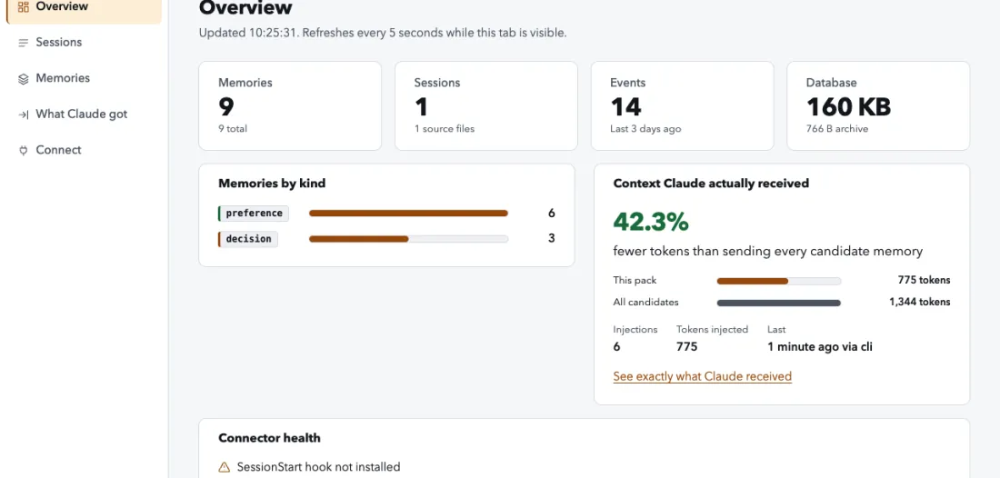
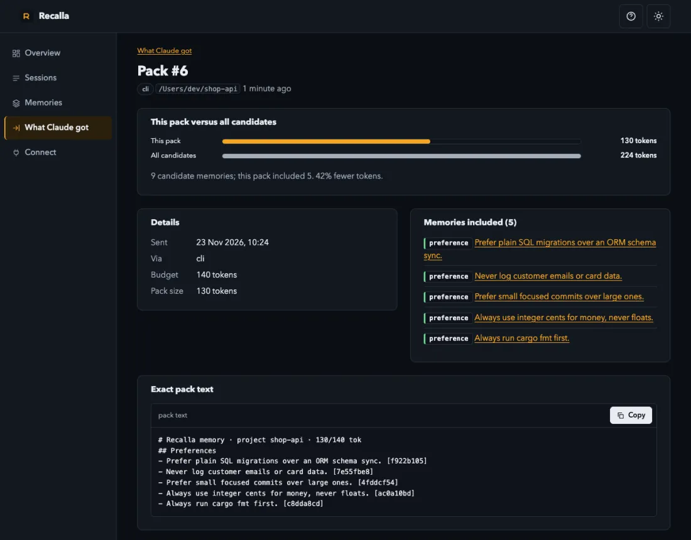

Memory your coding agents can trust.
Recalla is a local-first memory engine for Claude Code, Codex and other coding agents. It turns your existing session history into source-linked memories, flags a memory when the code it describes changes, and gives agents only what fits a token budget.
cargo install recallaBuilds from source. Needs a stable Rust toolchain.
cargo binstall recallaFetches the prebuilt binary instead of compiling. Needs cargo-binstall.
gh attestation verify <file> --repo damndeepesh/recallaPrebuilt binaries for macOS (arm64, x86_64) and Linux (x86_64, arm64) are on the latest release; pick yours below. Verify provenance with the command above.
Then, in your terminal
recalla backfillimports your Claude Code and Codex history.recalla hooks installmakes new Claude Code sessions start with relevant memory.recalla uiopens a local dashboard to see what it remembers.
# Recalla memory · project proj · 113/600 tok ## Preferences - Never commit with failing tests. [5f34437c] ## Procedures - `make check` [d44367e4] ## Needs re-verify ⚠ - We decided that `Store::insert` in src/store.rs must run inside a transaction. (symbol changed: Store::insert) [f76f7ff6]
See it work
A decision, then a code change. Recalla notices which memory went stale.
Backfill
A session where the agent decided
Store::insertmust run in a transaction.Pack
The decision is in the context pack, with its source id.
Edit and check
Change that function. The memory is flagged instead of trusted.
$ recalla backfill files 1 seen: 1 new, 0 resumed, 0 restarted, 0 unchanged, 0 failed harnesses claude-code 1 events 4 added, 0 malformed lines skipped redacted 0 archive 1.4 KB -> 435 B time 22 ms extracted 4 events -> 3 new memories (decision 1, preference 1, procedure 1), 0 duplicates time 10 ms mirror …/data/mirror $ recalla pack --budget 600 # Recalla memory · project proj · 98/600 tok ## Preferences - Never commit with failing tests. [5f34437c] ## Decisions - We decided that `Store::insert` in src/store.rs must run inside a transaction. [f76f7ff6] ## Procedures - `make check` [d44367e4] # ...edit Store::insert in src/store.rs... $ recalla check checked 1 anchors: 1 newly stale, 0 stale but matching again (confirm to clear) $ recalla pack --budget 600 # Recalla memory · project proj · 113/600 tok ## Preferences - Never commit with failing tests. [5f34437c] ## Procedures - `make check` [d44367e4] ## Needs re-verify ⚠ - We decided that `Store::insert` in src/store.rs must run inside a transaction. (symbol changed: Store::insert) [f76f7ff6]
See exactly what your agent was given
One command opens a dashboard in your browser. Localhost only, behind a one-time login link. It serves no third-party content and nothing leaves your machine.
recalla ui

Every session and memory in one place
Browse, search and see where each memory came from.
The exact pack each agent received
Its tokens against all candidate memories, so you can see what the budget saved.
Setup without the terminal
One-click hook install, a test recall for any project, and history import.
Four problems with agent memory
And what Recalla does about each.
History you already have is ignored
Most tools only capture from install onward.
Backfills existing Claude Code and Codex sessions into atomic memories. Every memory links to the exact message it came from (recalla why <id>).
Stale memories are served with full confidence
A fact about code that has since changed looks as true as the day it was written.
Anchors memories to code symbols. When the symbol changes, the memory is marked needs_reverify instead of being silently trusted.
Memory eats the context window
Large tool surfaces and LLM observers add thousands of tokens per request.
Token budgets. A 4-tool MCP surface under 1k tokens, packs capped at the budget you set, and a ledger of exactly what was injected.
Heavy runtimes and privacy risk
Background daemons, vector databases and cloud extraction.
One binary, no daemon, no LLM, no network. Secrets are redacted before anything touches disk.
How it works
Session logs in, a budgeted pack out. Components and data flow are in ARCHITECTURE.md.
Atomic memories
Decisions, facts, procedures, gotchas, preferences and tasks, each with provenance, confidence, scope and a reversible lifecycle. Nothing is hard-deleted.
Deterministic identity
A memory's ID is a hash of its content, so re-importing never creates duplicates and two machines agree on IDs without syncing.
Readable without the engine
A markdown mirror, one file per memory, lets any agent or person read memory with
catandgrep.
What you get
One Rust binary and a SQLite file. Apache-2.0.
Backfill with provenance
Resumable import of Claude Code and Codex history.
recalla whyshows the exact message behind any memory.Code anchors and staleness
Memories anchor to symbols in Rust, Python, Go, TypeScript and JavaScript. Change the code and
recalla checkflags them.Token budget and ledger
recalla pack --budgetnever exceeds what you set.recalla statsshows what was injected and its token cost.A 4-tool MCP server
recall,remember,review,why. All tool descriptions come to about 430 tokens.Hooks that never block
Claude Code hooks inject memory at session start and capture new turns. They exit cleanly on bad input and back up
settings.jsonfirst.Secret redaction
Three layers before anything is stored: known credential formats, secret-bearing keys and flags, and an entropy catch-all.
Markdown mirror and rebuild
One file per memory. If the database is lost,
recalla rebuild --from-mirrorrestores it, after a dry run and a backup.Private by default
No daemon, no LLM calls, no network calls in the default build. Source logs are never modified.
Numbers
Measured on an Apple M2. Every one comes from a command you can run.
21.6 s
Backfill, 320 MB of history
A synthetic Claude and Codex history. A re-run takes 0.03 s. Reproduce with
make perf.13 ms
p95 session-start hook
With 100k memories in the database. Reproduce with
make perf.~430
Tokens for all 4 MCP tools
The whole tool surface an agent has to read. Checked by
make e2e.10 MB
Release binary
Each language grammar is a cargo feature. Reproduce with
cargo build --release.
Privacy and security
make e2e runs 64 checks on the release binary, including that planted secrets never reach the database.
To report a vulnerability, see SECURITY.md. Please don't open a public issue.
Local only
No daemon, no LLM and no network calls in the default build. Your history never leaves your machine.
Redact before persist
Secrets are scrubbed before any text reaches the database or the mirror. The redactor is tested against real-world credential shapes and fuzzed.
Private files
Mirror files are mode 0600, and the mirror directory is 0700.
Your logs are read-only
Source session logs are never modified.
Download
Version 0.2.1 for macOS and Linux. On Windows, use the Linux build inside WSL.
-
Recommended for your system Download .tar.gz
macOS, Apple silicon
aarch64-apple-darwin -
Recommended for your system Download .tar.gz
macOS, Intel
x86_64-apple-darwin -
Recommended for your system Download .tar.gz
Linux, x86_64
x86_64-unknown-linux-gnu -
Recommended for your system Download .tar.gz
Linux, arm64
aarch64-unknown-linux-gnu -
Windows
Native build not working yetThe Linux build runs inside WSL today. Native Windows is planned.
Verify what you downloaded
Every release carries SHA256SUMS and provenance attestations. With both files in one folder:
macOS
shasum -a 256 -c --ignore-missing SHA256SUMSLinux
sha256sum -c --ignore-missing SHA256SUMSProvenance
gh attestation verify <file> --repo damndeepesh/recallaThe binaries are not notarized, so a binary downloaded in a browser on macOS may need xattr -d com.apple.quarantine <file>.
Or use cargo
cargo install recallacargo binstall recallaKnown limits and roadmap
Alpha software, with the weak spots listed. If Recalla misses or invents something on your logs, open an issue.
Extraction is rule-based
It is precise but misses implicit rules, and it can still pick up a stray sentence. Check what it found with
recalla search. To drop a wrong memory, forget it in the dashboard (recalla ui) or ask your agent to, through the MCPreviewtool. Both are reversible.Anchors need code to anchor to
A memory is anchored when it names a symbol that exists in a file from the same session, or a file path in its text. Prose-only histories produce few anchors.
Claude Code gets the hooks
Codex is covered by
backfilland MCP. Native Codex hooks are on the roadmap.English only
Extraction phrases are English.
Extraction quality is measured on a synthetic eval
53 labels. Treat it as a regression gate, not a claim about your logs.
macOS and Linux are tested in CI
Native Windows does not work yet; use WSL.